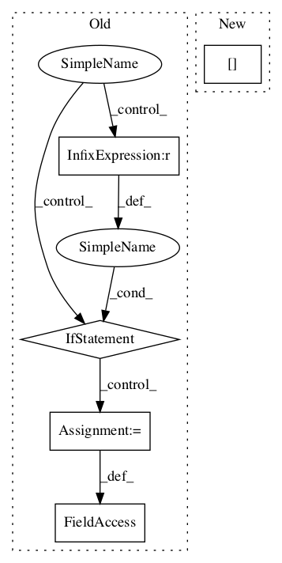

1a292afa66250814e3fa3fab26e4f7e5140baf31,contents/12_Proximal_Policy_Optimization/simply_PPO.py,PPO,update,#PPO#Any#Any#Any#Any#Any#,80

Before Change
// adaptive lambda
if kl < self.kl_target / 1.5:
self.lam /= 2
elif kl > self.kl_target * 1.5:
self.lam *= 2
self.lam = np.clip(self.lam, 1e-4, 10)
def _build_anet(self, name, trainable):
with tf.variable_scope(name):
After Change
if kl > 4*METHOD["kl_target"]:
break
if kl < METHOD["kl_target"] / 1.5: // adaptive lambda
METHOD["lam"] /= 2
elif kl > METHOD["kl_target"] * 1.5:
METHOD["lam"] *= 2
METHOD["lam"] = np.clip(self.lam, 1e-4, 10)
In pattern: SUPERPATTERN
Frequency: 3
Non-data size: 5
Instances
Project Name: MorvanZhou/Reinforcement-learning-with-tensorflow
Commit Name: 1a292afa66250814e3fa3fab26e4f7e5140baf31
Time:
Author: null
File Name: contents/12_Proximal_Policy_Optimization/simply_PPO.py
Class Name: PPO
Method Name: update
Project Name: marcoancona/DeepExplain
Commit Name: 2491af9de0dd8d20c4bb8236d9c51cdb33f14060
Time:
Author: null
File Name: deepexplain/tensorflow/methods.py
Class Name: IntegratedGradients
Method Name: run
Project Name: tensorlayer/tensorlayer
Commit Name: 35b2c4917344f338eda67c78673cf4064b3b4265
Time:
Author: null
File Name: examples/reinforcement_learning/tutorial_DQN.py
Class Name:
Method Name: